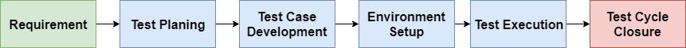
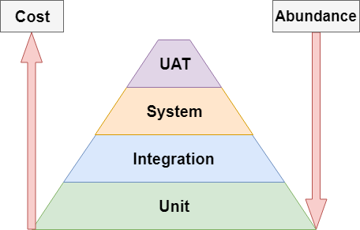

Topic | Notes in Depth |
STLC Overview: |
 |
Requirement Analysis | Test team studies requirements from a testing point of view to identify the testable requirements. The QA team may interact with various stakeholders to understand the requirements in detail. Requirements could be either functional or non functional.
Activities Identify the types of tests performed Gather details about testing priorities and focus. Prepare Requirement Tractability Matrix (RTM). Identify test environment details where testing is supposed to be carried out. Automation feasibility analysis (if required).
Documents |
Test Planning | Activities Documents Test Plan Effort Estimation
|
Test Case Development | Create, Verify and rework test cases and test scripts. Test data is identified or created then reviewed and reworked if needed.
Activities Returns Test cases/scripts. Test data.
|
Test Environment Setup | Software and hardware conditions under which a work product is tested. Can be done in parallel with Test Case Development phase. If an environment is provided a smoke test is done.
Activities Returns Environment is set up. Smoke test results.
|
Test Execution | Activities Execute tests Document test results and log defects for failed cases. Map defects to test cases in RTM. Retest defects once fixed. Track the defects to closure.
Returns |
Test Cycle Closure | Activities Evaluate cycle completion criteria based on Time, Test coverage, Cost, Software, Critical business objectives and quality. Prepare test metrics. Prepare Test Closure report. Qualitative and quantitative reporting of quality of the work product to the client. Test result analysis to find out the defect distribution by type and severity.
Documents Test Closure report Test Metrics
|
Testing Pyramid: |
  *First Diagram: Class representation *Second Diagram: Mike Cohn (Succeeding with Agile) [Outdated] General rule of thumb: Write tests with granularity. The higher the level of test, the less you should write.
The second image is outdated but serves as a good rule of thumb. |
Unit Testing | Most micro level of testing Test each component stand-alone (without dependencies) Usually requires mocking (Mockito) ex: JUnit, TestNG
|
Integration Testing | Test components with dependencies Components work with each other correctly Logically related models are tested as a group ex: Selenium (SE)
|
Systems Testing | |
User Acceptance Testing (UAT) | |
Functional/Non-Functional Testing: |
Functional vs Non-Functional | |